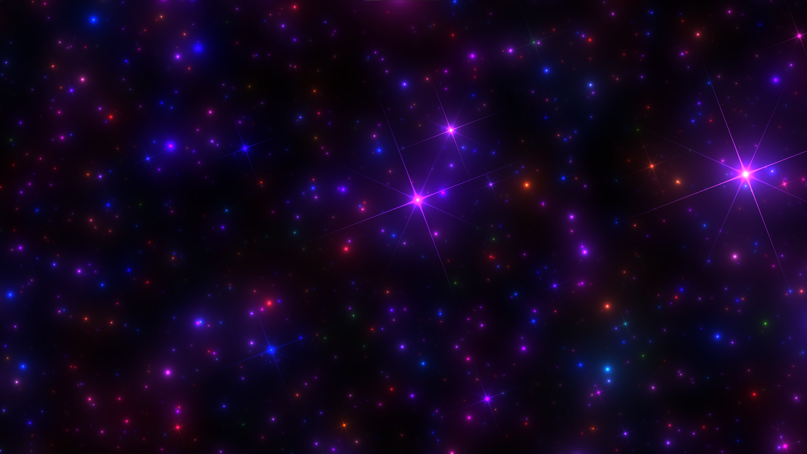
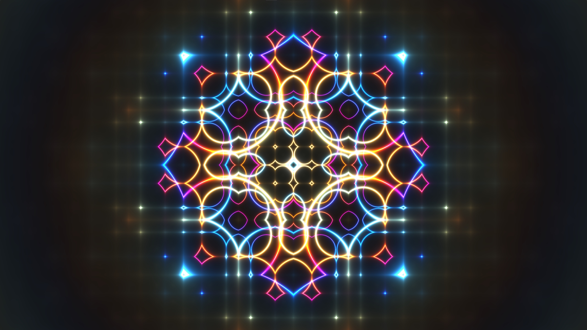
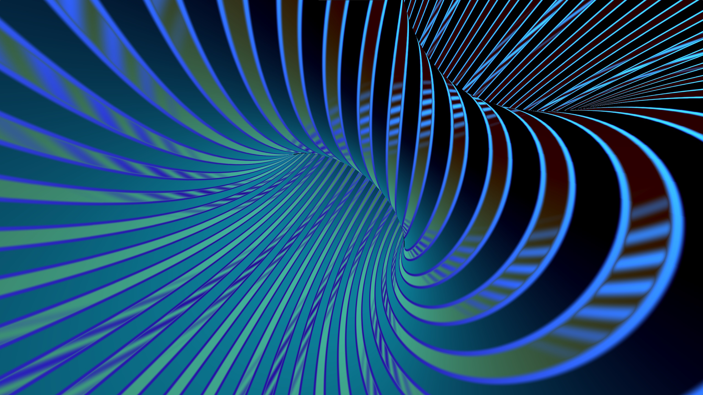

GLSL Shaders
During my internship at Warner Bros. Odyssey we were given a couple of hours each week to further develop our skills. I spent some of this time learning GLSL in Shadertoy through tutorials by The Art of Code and Kishumisu. I also created an ocean shader in Godot.
I decided to add my own spin on this psuedo-3D starfield shader by writing code that allows the user to look around by moving the mouse.
This is the first GLSL project I did, creating this striking mathematical pattern by following the excellent video by Kishumisu: "An Introduction to Shader Art Coding".
This spinning toroid shape is rendered using raymarching, and was the first shader I wrote that included raymarching functionality. I built on the tutorial to change the shape and camera movement to appear more dynamic. Later I created a much more advanced raymarching shader in Unity for displaying a nebula in my shader diorama project.
